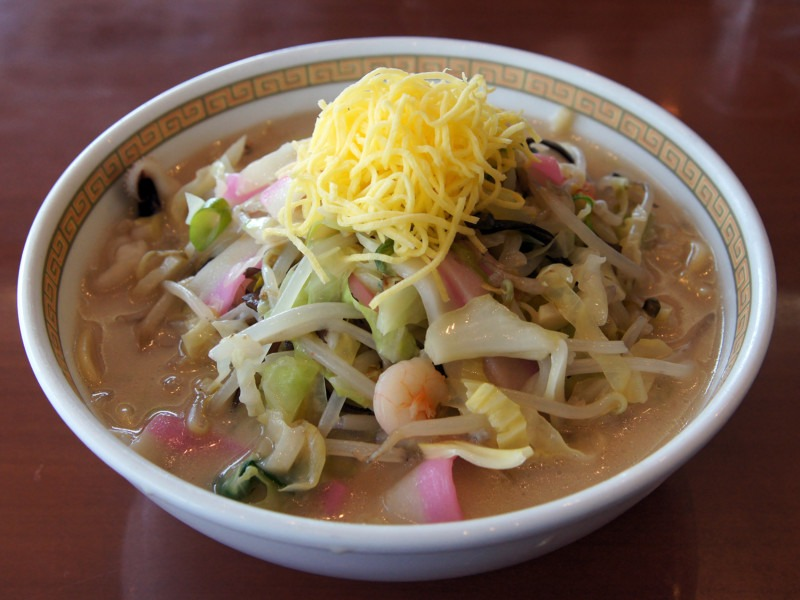
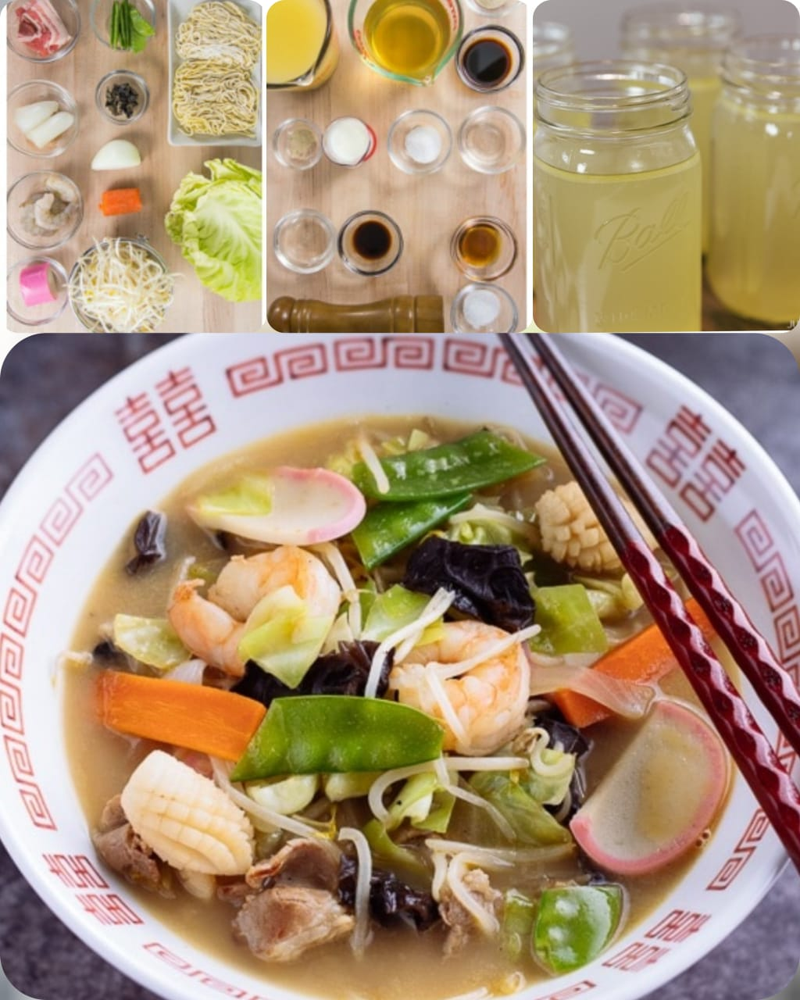

Champon
Home
Champon (ちゃんぽん) is a noodle soup dish consisting of pork, seafood, and vegetables served on top of the noodles. The owner of a Chinese restaurant Shikairō (四海楼) in Nagasaki first created this dish based on a Chinese dish tonniishiimen (湯肉絲麵). He served this quick, cheap, fulfilling dish to the Chinese international students during Meiji Period.

Ingredients
2 cups Chicken Stock/Broth
(homemade or store bought) 500 ml
1 cup dashi
(Japanese soup stock)
1 Tbsp sake
1 Tbsp soy sauce
1 tsp sugar
¼ cup whole milk
⅛ tsp white pepper powder
½ tsp kosher salt
2 oz pork belly slices
2.5 oz shrimp
2 oz squid
1 Tbsp sake
1 tsp soy sauce
6 pieces mushrooms
2 inches carrot
¼ onion
5 oz green cabbage
1 oz snow pea
⅓ kamaboko (fish cake)
4 oz bean sprouts
1 Tbsp roasted sesame oil
freshly ground black pepper
11 oz champon noodles

Nutrition Facts
calories 318
Total Fat 11g
Cholestero 10mg
Sodium 2362mg
Total Carbohydrate 43g
Vitamin C 0%
vitamin A 0%
Procedure
Gather all the ingredients. To cook the noodles , bring a large pot of water to a boil over low heat.
In a medium pot, combine 2 cups chicken stock/broth and 1 cup dashi.
Add 1 Tbsp sake, 1 Tbsp soy sauce, 1 tsp granulated sugar and bring to a boil.
Once boiling, add ¼ cup whole milk and ⅛ tsp white pepper.
Taste the soup and see if you need to season with kosher salt. I added about ½ tsp salt. Saltiness varies depending on the chicken stock.
Cut the pork belly into 1 inch (2.5 cm) pieces. Add 1 tsp sake and 1 tsp soy sauce.
Add 2 tsp sake for shrimp and squid (or here I put 1 tsp sake for each bowl of shrimp and squid). Set aside for 5 minutes to remove the unwanted smell.
Score the squid in the crisscross pattern by making parallel diagonal lines. Make sure not to cut it all the way through.
In a small bowl, add dried wood ear mushrooms and just enough water to cover them. Re-hydrate until soft and squeeze to remove the water. Cut into smaller pieces.
Cut the carrot into thin slabs and cut in half lengthwise.
Cut the onion into slices.
Remove the core of the cabbage leaves. Then cut into strips and then smaller square pieces.
Remove the strings from snow peas and cut in half. Thinly slice the kamaboko fish cake.
Heat the wok on medium high and add 1 Tbsp sesame oil.
Once hot, add the pork belly and cook until no longer pink.
Add the shrimp and squid and cook no longer opaque.
Then add the onion and carrot, and stir fry for 1 minute.
Add wood ear mushrooms and cabbage and stir fry for 1 minute.
Add the kamaboko fish cake, bean sprouts, and snow peas and stir fry for 1 minute.
Season with freshly ground black pepper and toss to combine.
Add the soup into the wok.
Taste the soup and see if you need to adjust with salt. I added ⅛ tsp kosher salt.
Cook the noodles according to the package instructions. Make sure to separate the noodles first before adding to the boiling water.
I usually cook the noodles 15-20 seconds less than what the package instruction recommends. Pick up the noodles (or drain the noodles into a sieve) and transfer them to serving bowls. Make sure to drain the water well so it won’t dilute the soup.
Add the toppings and soup and serve immediately.
Expert Guide
Back ←
Scroll to Top ↑